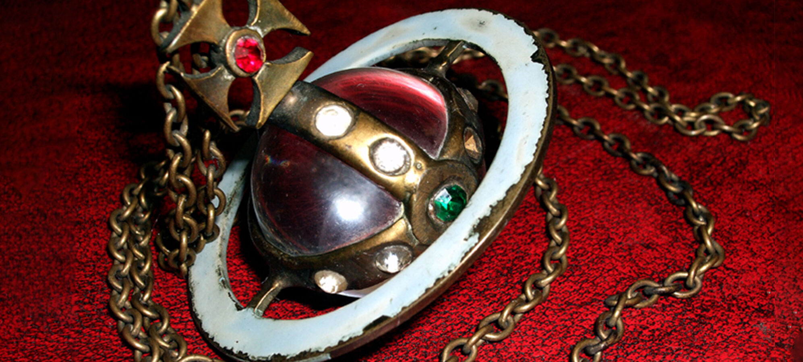
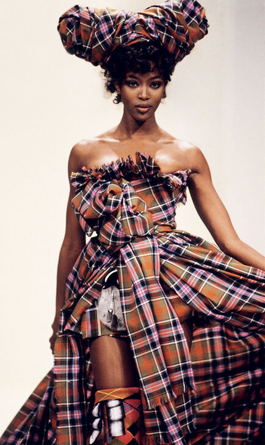
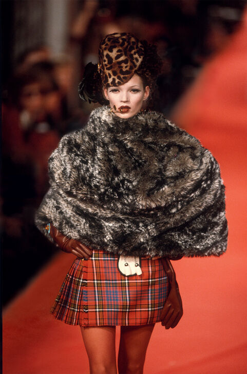
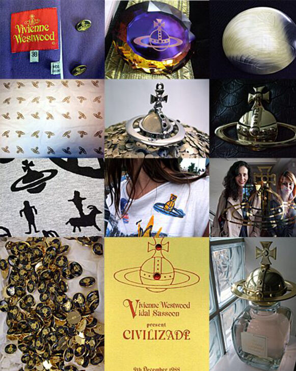

Dame Vivienne Isabel Westwood was a British fashion designer and businesswoman who was renowned for pioneering punk and new-wave fashion. She is widely considered one of the most legendary and boundary-pushing fashion designers to date. Westwood rose to fame in the late 1970s when her early designs helped construct the punk subculture.Born Vivienne Isabel Swire on April 8, 1941, in the English town of Glossop in Derbyshire, Westwood came from a modest background. At the age of 17, Westwood's family moved to Harrow where the future star worked at a local factory, subsequently enrolling at a teacher training school. She married Derek Westwood at age 21, with whom she had son, Ben, and continued to work as a teacher. The marriage dissolved and she met Sex Pistols manager and fellow punk pioneer Malcolm Mclaren.


